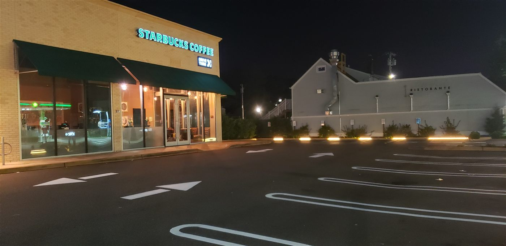

The Craft

June 2026 · 6 min read
The Invisible Infrastructure
Every line on every parking lot tells a story. An inside look at the craft, precision, and surprising importance of the stripes beneath your wheels.
Read Article →
Compliance

June 2026 · 6 min read
Parking Lot ADA Compliance in New York
What every Long Island and NYC property manager needs to know, and the cost of getting it wrong.
Read Article →
Maintenance

July 2026 · 4 min read
When to Restripe: 7 Signs It's Time
Faded lines cost you customers, capacity, and compliance. How to know your lot is due.
Read Article →
Pricing

June 2026 · 5 min read
Parking Lot Striping Cost on Long Island
The honest answer to the first question every property owner asks, and how to budget.
Read Article →
Night Work

June 2026 · 4 min read
Night Striping: Zero Downtime
Overnight work keeps your business open and your customers parking. Fresh lines by morning.
Read Article →
Property Managers

June 2026 · 5 min read
Striping for Property Managers
Keep every site in your portfolio consistent, compliant, and on one schedule.
Read Article →
Sealcoating

June 2026 · 5 min read
Sealcoating vs. Striping
Two different jobs for two different problems. What your lot needs, and why they pair.
Read Article →